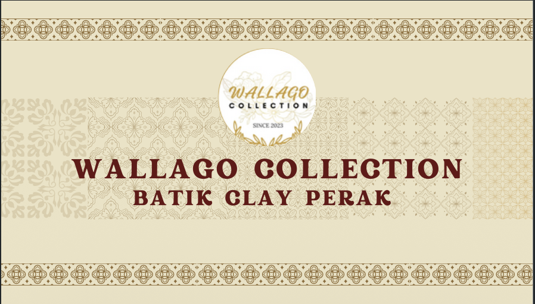

Explore our exclusive collection of traditional batik materials including Cotton Satin, Kain Primasima, and Cotton Poplin. Click any category below to view all available patterns.

High-grade Cotton Satin, Primasima, and Poplin fabrics selected for lasting elegance.
Exquisite traditional patterns featuring rich earth and clay tones.
Fast and seamless customer inquiries straight through WhatsApp.
Click any card below to browse all pattern variants for that fabric.
Smooth texture with a subtle sheen, offering supreme comfort.
High-grade traditional cotton known for its durability and crisp feel.
Lightweight and highly breathable, perfect for everyday tropical wear.
Get in touch directly with Normah via WhatsApp to explore more fabric options and secure your order.
Chat with Normah (010-454 7516)